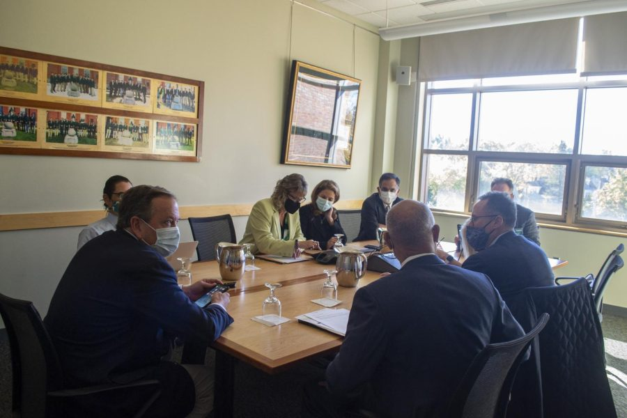

UVM Board approves grant awards for Vermonters
Members of the UVM Board committee sit inside the Boulder Society Room Oct. 29. THE CYNIC/Olivia Miler
The UVM Board approved the Wilbur Trust Fund grant awards during their Oct. 29 meeting at 11:30 a.m.
The purpose of the UVM Board is to elect successors to fill vacancies among their members. The Board has nine self-perpetuating members including a chair, vice chair and a secretary, according to their website. Each of these positions are elected every May.
The 2021-22 Wilbur Trust Fund awarded 171 Vermont high school students with grants ranging from $296 to $13,421, Chair Jodi Goldstein said. The money given totalled $868,762.
The Wilbur Trust Fund is a program that distributes grants to Vermont high school students for their morals, their dedication to education and their financial abilities to receive the education, according to the committee meeting itinerary.
Students who receive the grant are informed their money is contingent on board approval, Goldstein said.
The board approved the money unanimously.
The total money available for grants has increased from $21,216,148 July 2020 to $27,044,275 in July 2021, Goldstein said.
At 11:40 a.m. the UVM Board went into executive session for the remainder of the 30 minute meeting.
Executive sessions are closed sessions in which the chair, along with an administrative liaison, are given discretion over whether any non-trustees are allowed to remain in the session, according to UVM’s board of trustees website.